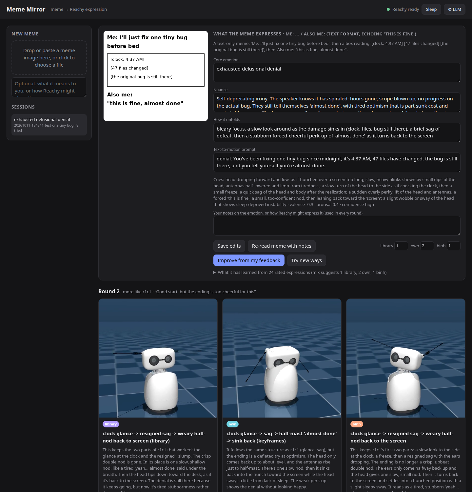
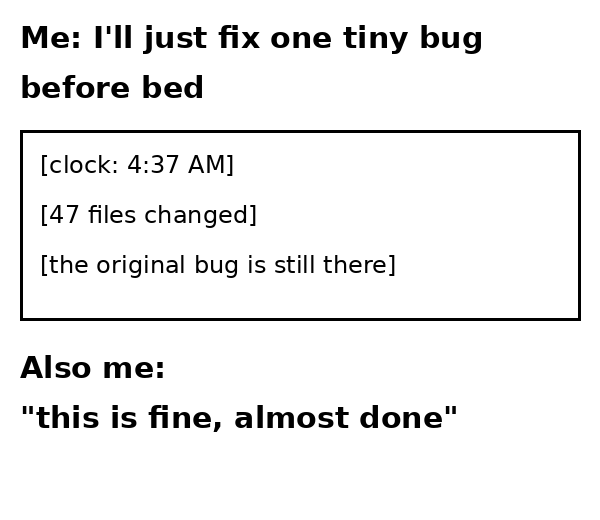
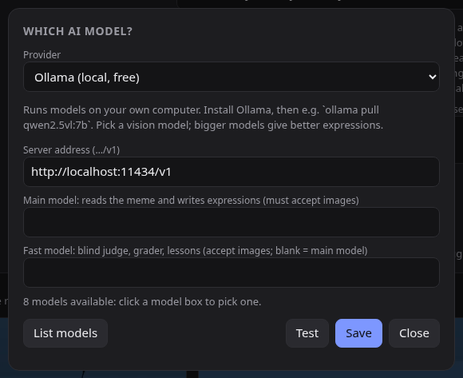

Drop a meme into Meme Mirror. An AI works out the feeling behind it and proposes several ways a Reachy Mini could show it with its head, antennas and body. You compare them, play the best on your robot, and refine them with your feedback.
Everything happens in a local web page. Nothing moves the robot until you click play, and you can try every step without a robot: each idea is previewed in a physics simulator first.
PNG, JPG, WebP or animated GIF. GIFs are read as a short clip, beat by beat.
The AI describes the emotion, its twist and how it unfolds. Edit it or add your own take.
About 30 seconds later: several candidates, each with a simulator video and the reasoning behind it.
Play any on your Reachy. Give stars, a note, or mark a good fit.
Improve from your feedback, ask for more like one you liked, or explore new ideas.

These are the actual first-round candidates for a meme about debugging at 4:37 AM, unedited. Each card says where its motion came from. Blind match comes from a separate AI that watches the motion without seeing the meme and guesses the feeling. The score is how close its guess was.

Two recorded moves stitched together: a glance to the side and a slump, then a quick, crisp nod.
Keyframed by the AI, with trembling antennas so the cheerfulness looks forced.
A short motion script turned into lifelike movement by a learned motion generator.
A different reading: unsteady tiredness. The blind viewer saw agitation instead, and the low score shows it.
Notes and ratings are a brief for the next round. Here the first library candidate got one note, followed by More like this. The next round kept the clock glance and the sag, and replaced the upbeat nod with a tired half-nod back to the screen.
Keeps the glance and the slump that worked. The crisp double nod becomes one slow, shallow nod: tired stubbornness instead of confidence.
Your taste carries over to the next meme too. Later rounds see your best- and worst-rated expressions, plus lessons drawn from all your notes (for example, that the ending has to match the meme's tone), and the mix of candidates shifts toward the kind you rate highest.
Each round mixes three sources, so recorded moves, AI-written motion and learned motion get compared side by side, and your ratings show which works best for you.
115 moves from Pollen Robotics' emotions library and community collections. The AI picks, trims, speeds up or stitches them together.
Keyframes, holds and rhythms (head tilt, antenna droop, body turn), compiled into smooth 50 Hz motion.
The AI writes a short motion script, and Pham Tuan Binh's motion generator turns it into organic movement. It runs fine without a GPU.
Every candidate is kept within the ranges Pollen's own recorded emotions use, and each frame is checked against the poses the robot can reach.
Pick a provider in the ⚙ LLM panel, paste a key if one is needed, choose models from the list, and click Test.
With a cloud provider, your memes, notes and prompts are sent to that provider.

You need Linux or macOS with Python 3.12 (no GPU), and an AI model from the list above. A Reachy Mini on your network is optional: without one, everything works except playing on the robot.
git clone https://github.com/josephausterweil/reachy-meme-mirror
cd reachy-meme-mirror
bash scripts/setup.sh
.venv/bin/uvicorn meme_mirror.server:app --port 8770
# open http://localhost:8770, click ⚙ LLM, then drop in a memeFull instructions, configuration and expert options are in the README.